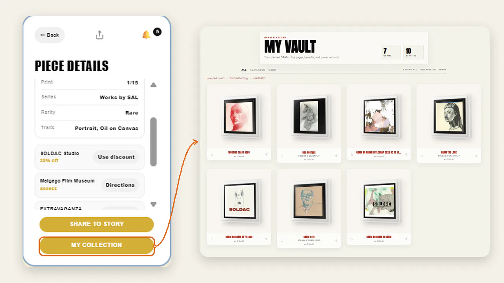
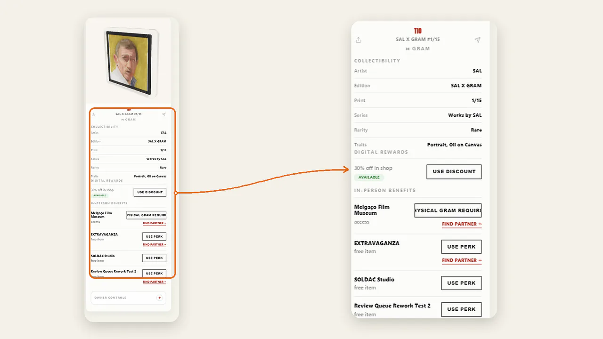
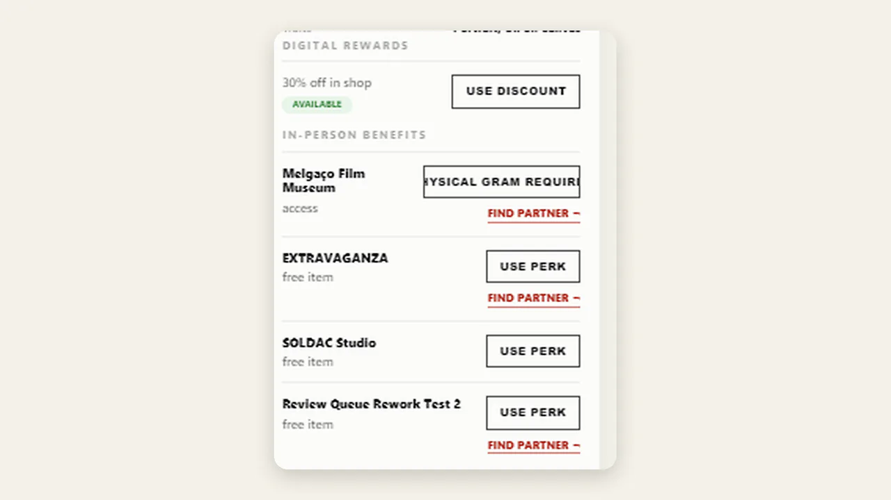
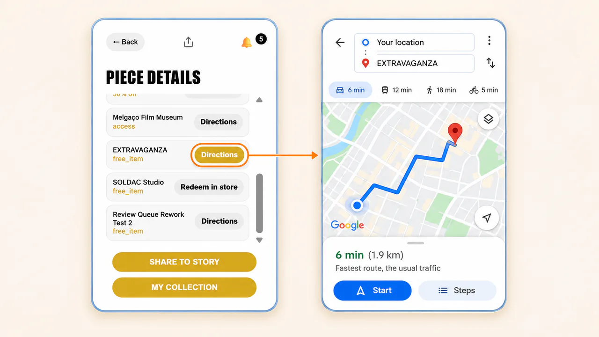

Mi Colección
Dónde ves tus GRAMs vinculadas, actividad, beneficios y más.
Qué aparece en la colección
Tu colección reúne las GRAMs vinculadas a tu cuenta. Es el lugar adecuado para revisar propiedad, actividad y beneficios asociados.
Por qué importa
La colección funciona como la base de tu cuenta para seguir lo que posees, lo que desbloqueaste y lo que cambió recientemente.
Beneficios en la colección
Cuando una GRAM tiene beneficios elegibles, aparecen con sus instrucciones. Algunos tienen límites o un tiempo de espera antes de que puedas usarlos otra vez.
Usar la colección al canjear beneficios
Comprueba el partner, el beneficio y los límites antes de ir. En el mostrador, lleva la GRAM física y sigue las instrucciones; normalmente no necesitas mostrar el teléfono.
Si no ves tus GRAMs
Confirma que estás en la cuenta con la que hiciste el claim. Actualiza la página; si acabas de reclamarla, espera 30–60 segundos y actualiza de nuevo.
Guía visual



